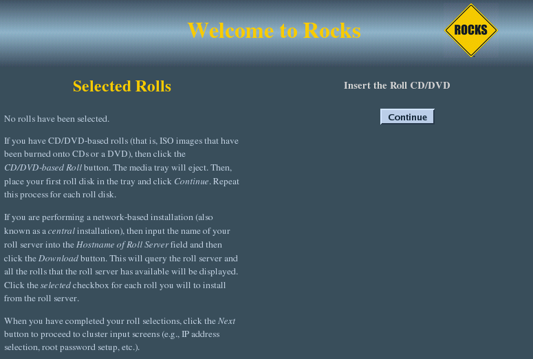

| JumpStart Users Guide:
| ||
|---|---|---|
| Prev | Chapter 1. Installing the JumpStart Roll | Next |
The JumpStart Roll is added to a Frontend installation in exactly the same manner as any of the other rolls. Specifically, after, say the HPC Roll, is added, the installer will once return to the original web screen. If you're installing from a CD image, click on "CD/DVD Based Roll". If you're installing from a central server, enter the URL for the central server, and click on "Download".
Now insert the CD/DVD image, and click on "Continue".

Once the Roll shows up, select it and click on "Submit". It should then read the roll configuration from the disk and show up on the right side of the screen, as a "Selected Roll"